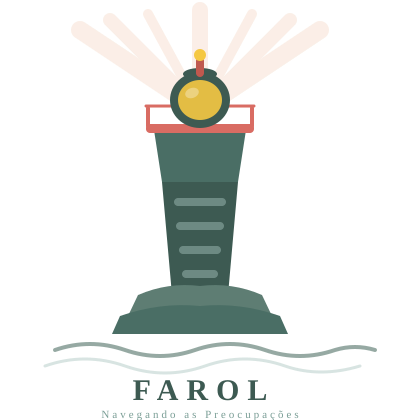

Farol
Para quem se preocupa demais
Oito módulos para entender e mudar a relação com as preocupações, com técnicas de TCC, ACT, mindfulness e compaixão.
8 módulosAnsiedade (TAG)Diário
Abrir o Farol
Floresça
Cultivando emoções positivas
Oito módulos baseados em psicologia positiva e compaixão, mais um laboratório de experimentos para testar crenças que bloqueiam o prazer.
8 módulosLaboratórioDiário
Abrir o Floresça
Segurança Interna
Reconstruindo a sensação de segurança
Um percurso em cinco etapas para regular o corpo, organizar o que aconteceu e voltar a se sentir seguro por dentro.
5 etapasTrauma
Abrir Segurança Interna
Matiz
Cada sentimento tem seu tom
Um recurso para reconhecer e nomear as seis emoções básicas com precisão, pensado também para quem tem alexitimia ou é neurodivergente.
Emoções básicasAcessível
Abrir o Matiz